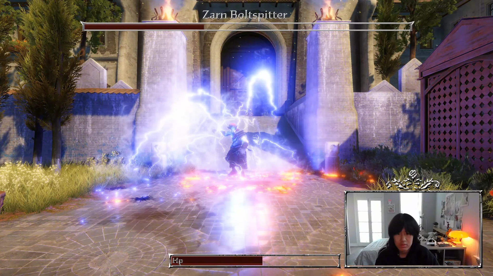
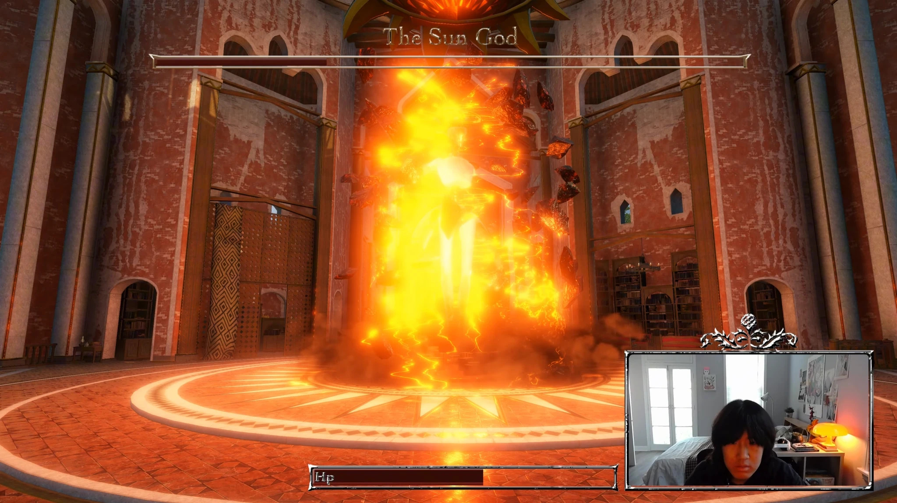
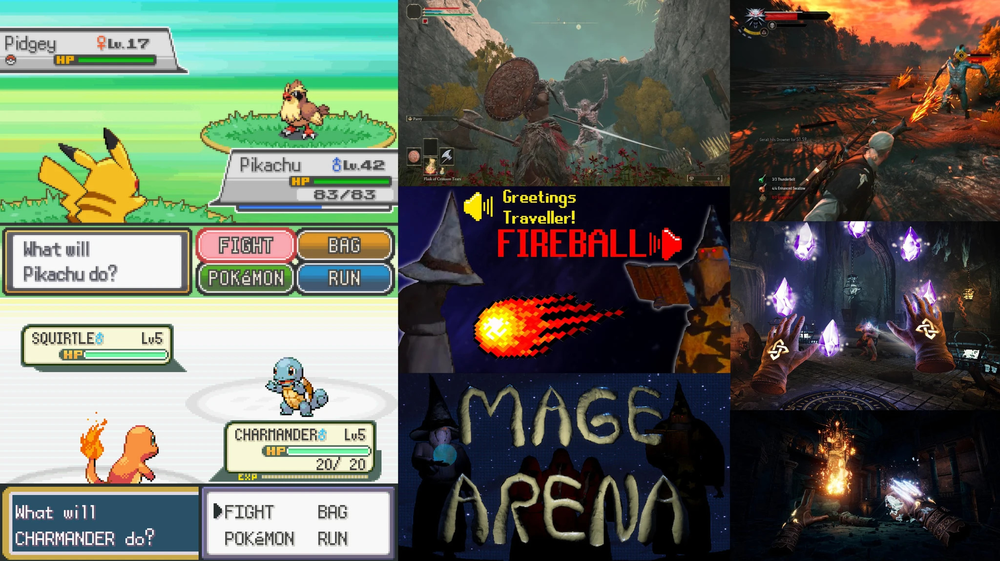
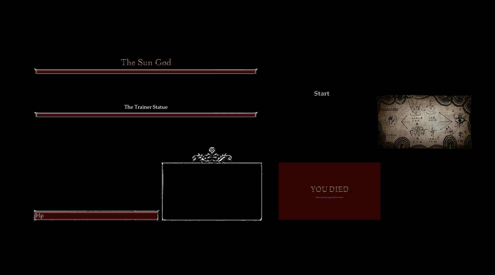
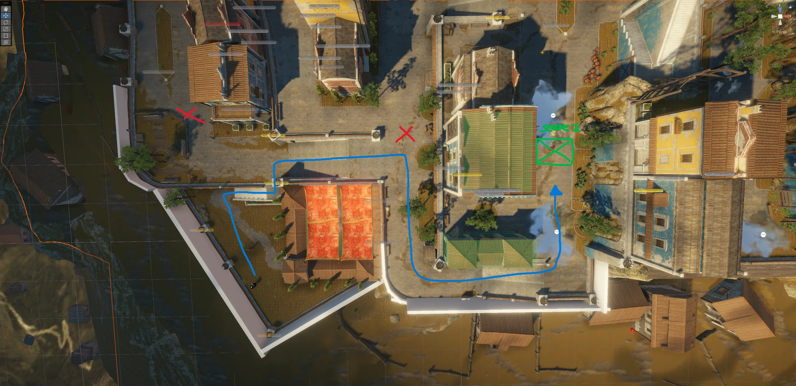
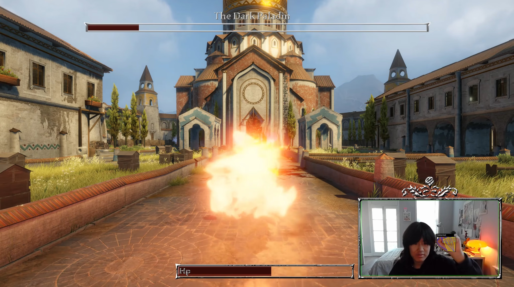

DAVID LIANG · GAMEPLAY & DEVELOPMENT
HandSpell
A turn-based battle game where your hands cast the spells. A real-time hand-tracking demo connecting Python MediaPipe to Unity through OSC.
About the Game
HandSpell turns your own hands into the core input system. Each gesture casts a different spell in turn-based battles against enemies. To learn a spell, players interpret clues in a spell book and work out the corresponding gesture.
The prototype connects real-time hand tracking in Python MediaPipe to Unity through OSC, exploring how physical gestures can become a practical gameplay mechanic.


Design Goals
The project began as a collaborative experiment with MediaPipe: could hand tracking become the main way to play? Mage Arena, where spoken spell names trigger magic, inspired me to explore another physical form of input.
With both hands occupied, traditional mouse and keyboard controls were no longer practical. A Pokémon-inspired turn-based structure gives players time to form gestures and focus on their next spell.

I designed the spell book as a puzzle. Visual clues encourage players to discover each gesture instead of following an explicit instruction, making learning the controls part of the experience.


Challenges & Next Steps
The current game is a small technical and design demo, and its battles can become repetitive. It establishes the hand-tracking interaction, while leaving room to develop the combat further.
Future directions include mana management, deeper interactions between spells, and multiplayer features to add depth and replayability.
